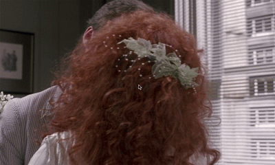
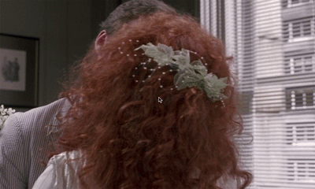

The Blue Danube
By Richard Strauss II
Ride of the Valkyries
By Richard Wagner
Nocturne Op.9 No.2
By Frédéric Chopin
Toccata and Fugue
By J.S. Bach
We remember music from movies almost as often as we recall particular scenes from movies; music has a unique ability to heighten the emotional impact of a motion picture. As early as the 1890s, before audible dialogue was introduced into film, a pianist, organist or small orchestra would accompany silent films. Today’s movie soundtracks feature a wide range of original compositions, prewritten classical pieces and numerous music genres including pop and rock. Keep reading to explore a data set of classical music that has appeared in movies from the 1930s all the way up to the present! From The Wizard of Oz to The Amazing Spider-Man 2 and everything in between!
To start, Let’s explore the impact that music has on a scene. Select a movie from the five options below to listen to the movie’s original soundtrack, and then press the play buttons on the sidebar to hear how different pieces of music can change how a movie looks and feels to the audience.
The Blue Danube
By Richard Strauss II
Ride of the Valkyries
By Richard Wagner
Nocturne Op.9 No.2
By Frédéric Chopin
Toccata and Fugue
By J.S. Bach
So, what did you think? These five movies were selected because they were scenes in famous movies where the soundtrack dominated the scene, instead of character dialogue. The four additional classical tunes were chosen based on their recognizability factor (that moment where someone might say, “I have heard this before, but I don’t know what it is called”) and also because of their prominence in existing film soundtracks.
Below, you can explore the ten top-played classical pieces that appear on film soundtracks. Are they mostly familiar to you? Which pieces are new? Can you immediately associate a movie scene with any of them?
The top pieces of classical music in movies capture various emotions of the human experience, including joy, relief, humor, celebration and adventure. The number one piece of classical music used in the movies is The Blue Danube by Johann Strauss II. A total of 48 movie soundtracks contain this piece spanning from 1937 to 2015.

The Champagne Waltz (1937): This movie is the earliest on record to feature the Blue Danube. The piece is used for a dancing scene while a royal overlooks the ballroom.
For many early movies, The Blue Danube functions as a background waltz for dancing or scenes of beauty and weightlessness.

The Amazing Spider-Man 2 (2014): This movie is one of the latest movies on record to use the Blue Danube. It serves as background music while the feature character gets tortured by scientists.
As the years go on, there seems to be a growing trend to use the music ironically or in juxtaposition to other elements of the movie scene such as dialogue or action.
Above, we see the number of movies per year for the top ten pieces. During the 1990s, we see usage of this pieces increase greatly. According to this article from the Guardian, the 90s was a “simpler, more innocent time.” Could the rise in classical music during this decade indicate that more traditional, classical music well represented those ideals?
The top composers for this list may come as no surprise- Mozart, Bach and Beethoven are considered to be the top classical composers of all time. In his lifetime, Mozart was thought to have written around 600 pieces, and almost 300 of them made it into movies. Interesting enough, the only composer of the three to make it to the top ten pieces of all time was Bach, for his Toccata and Fugue in D minor, in 10th place. Wagner had two pieces in the top ten: 2nd place for his Bridal Chorus and 7th place for Ride of the Valkyries. Wagner, Puccini, and Verdi were prominently known as composers for opera, whose music lends itself well for film.
The majority of the composers lived and composed during the Romantic Era of music, which was from around 1820 to 1910. The music associated with this time was emotional, dramatic, and programmatic. Music was said to even be inspired by non-musical stimuli, such as nature, literature, or poetry; it would make sense that this was the music that was preferred to accompany film scenes.
Below, we go more in-depth with each piece in the top ten and explore the genre breakdown for the individual pieces. According to IMDB, movies are typically categorized into more than one genre- the top genres for each movie are recorded below. In general, there are higher numbers for the genres of Comedy, Drama, and Romance. In fact, the majority of the top ten pieces have the highest number of movies in the genre of comedy. The only two pieces that have a higher number of movies classified as Drama are The Blue Danube (which is closely ranked next to Comedy) and the Chopin Nocturne, which happens to be a very dramatic piece itself. Also, it’s interesting to observe an uptick in Fantasy and Horror for the Toccata and Fugue piece.

Through this categorization of genre, we see the emergence of classical music being used to convey different emotional states- most prominently Comedy (happy emotions) and Drama (happy and sad mixture).

Above we have the top ten movies that have the most classical music used it them, ranging from 25 pieces to 12 pieces. Many of these movies have to do with musical stories, such as the life and times of a particular composer or musician, or a group of musicians performing music together. The only exceptions for this are He Got Game, Lorenzo's Oil, and Sour Grapes. We also see that the highest number of movies in a particular genre is for Drama. Again, it’s important to note that IMDB typically gives each movie in its database multiple genre classifications.
The second and third most popular classical pieces in movies are both used in weddings. The Lohengrin: Bridal Chorus by Richard Wagner is used as a processional as the bride walks down the aisle. Interestingly enough, the opera from which it originates, Lohengrin, does not use the chorus as a processional; it is actually used after the ceremony. Take a listen to the piece below:
The 43 movies that the Bridal Chorus was used in were analyzed for content and show minimal changes over time among the wedding scenes: the scene typically consisted of a caucasian female walking down the aisle. A hypothesis before the research was that the wedding scenes would reflect changes in culture over time, such as race and sexuality. This turned out to not be the case. The very reason that this piece could be chosen is to symbolize the very traditional, conservative associations of marriage.
Hover over each movie for a GIF of the wedding scene where the Bridal March is used as the bride walks down the aisle:


The Glenn Miller Story

A Summer Place


Irma la Douce


Private Benjamin


Out of Africa


Blind Date

Spaceballs
 

Beaches


Beetlejuice


Chances Are

Cousins


License to Kill


Steel Magnolias


Gremlins 2: The New Batch


Father of the Bride


A League of Their Own


Addams Family Values


The Cemetary Club


Robin Hood: Men in Tights


Grumpier Old Men


The Boxer


In and Out


National Lapoon's Vegas Vaca


Mafia!

A Night at the Roxbury


The Object of My Affection


The Bachelor


The Other Sister


Runaway Bride


28 Days


Bridget Jone's Diary


Saving Silverman


Brown Sugar


My Big Fat Greek Wedding

The Santa Clause 2


How to Deal


Just Married


Spider-Man 2


The Hangover


Devil's Due


Muppets Most Wanted


The New Girlfriend


The Dressmaker
Music plays a key role in modern story-telling through movies. This article has explored a data set containing a wide variety of classical music, with many top hits that sound familiar to movie goers, yet composers and titles of these pieces may not have name associations. Top classical pieces including The Wedding March and The William Tell Overture are often used to symbolize major life events such as school graduation, marriage, even war. Mozart, Beethoven and Bach are the top composers of classical pieces within the movies of this data set. Musical compositions by these classical giants are used within movie soundtracks to represent various emotions, especially humor, and may help serve as comic relief in movies and heighten these emotions through musical sound.
Further explorations in this area could include examining how classical music serves as a common element for setting a mood (e.g. weddings, war, drama). Another study area could be using classical music with more diverse subjects in future movies. Finally, a music accessibility project could investigate how movies can help classical music reach a far wider audience beyond typical classical concert, ballet or opera goers. Any further exploration should include a new scrape of data directly from IMDB for the most accurate data.
Naxos Music Library is an educational resource on the web that uses an online search engine to compile a large selection of studied music. One particular section of the website houses a data set containing every piece of classical music that has appeared in motion pictures since the 1930s, derived from IMDB. After an initial scrape of the website resource using this Python script by Lenny Martinez, the data was imported into Excel for a final cleaning and preliminary data analysis. Data analysis consisted of four basic questions: What are the top pieces, top composers, movies with the most music and which genre is most influenced by classical music. Genres were collected for each movie from IMDB, excluding animation and family as a categories.
Designer/Coder/Animator: Mackenzie Miller
Advisor: Alberto Cairo
Graphics: Lorena Lopez
Special thanks to Erin Brown (University of Miami) for getting me interested in HTML/CSS/JS in the first place while I was still a music major, and Lenny Martinez Dominguez (University of Miami) for advising me in my data cleaning/analysis process and offering me countless office hours!
Behind the Scenes: click here to read the weekly blog that I kept during the making of this project.
This capstone project was in partial fulfillment of the Master of Fine Arts degree in Interactive Media at the University of Miami.